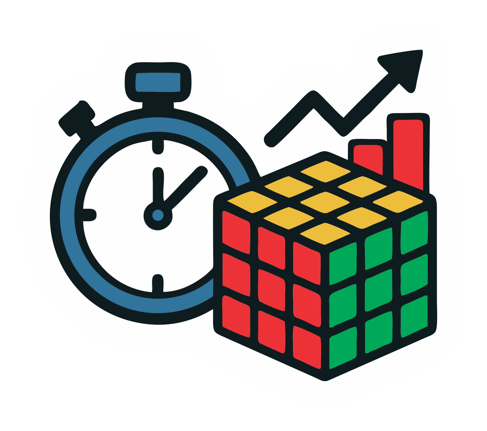
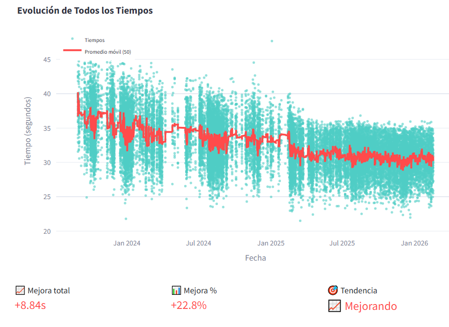
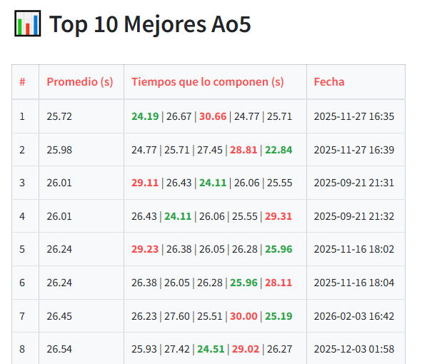
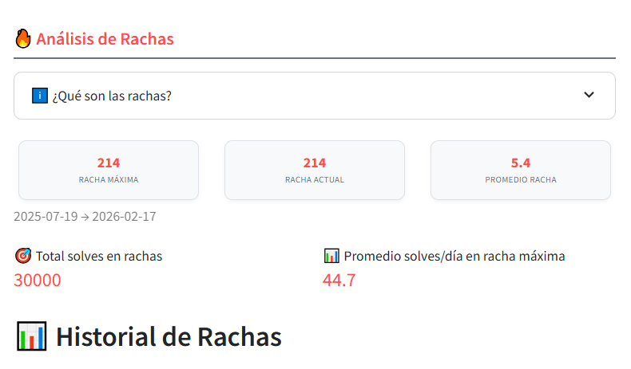
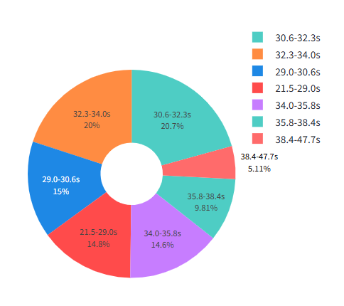
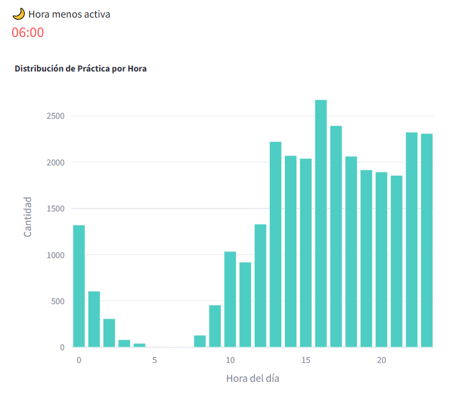
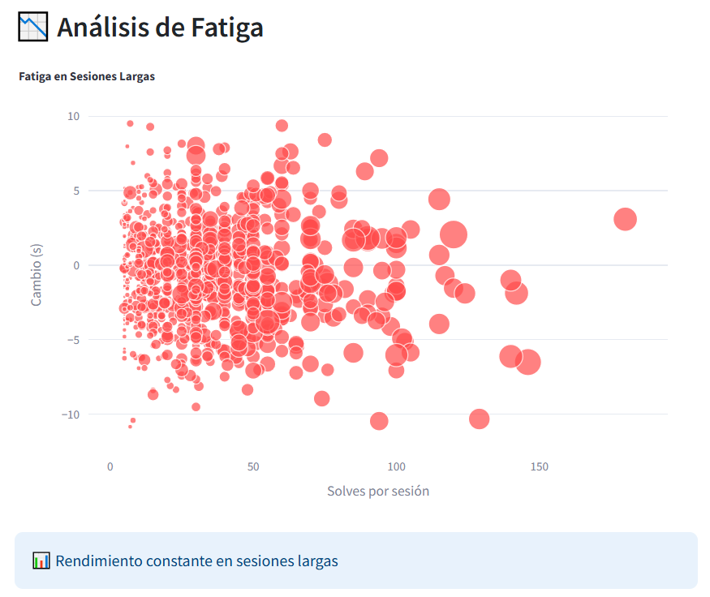

Cubing Stats
Aplicación para análisis estadístico de tiempos en speedcubing
📖 Descripción del Proyecto
Como speedcuber y coordinador del Oaxaca Rubik's Team siempre he sentido la necesidad de tener mejores herramientas para analizar mi progreso. Por eso desarrollé Cubing Stats, una aplicación web que permite registrar, visualizar y analizar tiempos de práctica en speedcubing.
La app que estoy diseñando es para ayudar a speedcubers de todos los niveles a entender su evolución, identificar áreas de mejora y mantener motivación a través de visualizaciones claras de su progreso. Soporta múltiples formatos de archivo de las apps más populares como Cubic Timer, Twisty Timer, Nano Timer y CsTimer.
🚀 Prueba la App Ahora
La aplicación está desplegada en Streamlit Cloud y aunque aún está en desarrollo ya está lista para usar. Solo sube tu archivo de tiempos y comienza a analizar tu progreso.
La app es completamente gratuita y no requiere registro
✨ Características Principales
Progreso temporal
Gráficas interactivas de evolución de tiempos con promedio móvil ajustable
Métricas avanzadas
Promedios (mo3, ao5, ao12, ao50, ao100), mejores tiempos, consistencia
Múltiples formatos
Soporte para Cubic Timer, Twisty Timer (en proceso), Nano Timer y CsTimer
Distribuciones
Histogramas, diagramas de caja y análisis de frecuencia por rangos
Análisis de rachas
Seguimiento de días consecutivos de práctica y estadísticas de actividad
Análisis avanzado
Fatiga en sesiones, mejor hora para practicar, probabilidad de PB
📊 Ejemplos de Análisis

';" style="width: 100%; height: 100%; object-fit: cover;">Evolución de Tiempos
Visualización interactiva de todos tus solves con promedio móvil. Identifica tendencias de mejora a lo largo del tiempo.

';" style="width: 100%; height: 100%; object-fit: cover;">Top 10 Mejores Ao5
Listado detallado de tus mejores promedios de 5, mostrando los tiempos que los componen y cuándo los lograste.

';" style="width: 100%; height: 100%; object-fit: cover;">Análisis de Rachas
Seguimiento de días consecutivos de práctica. Identifica tus períodos más productivos y consistentes.

';" style="width: 100%; height: 100%; object-fit: cover;">Distribución por Rangos
Clasificación automática de tiempos en percentiles. Ve en qué rango se concentran la mayoría de tus solves.

';" style="width: 100%; height: 100%; object-fit: cover;">Actividad por Hora
Descubre a qué horas del día rindes mejor y cuándo sueles practicar más frecuentemente.

';" style="width: 100%; height: 100%; object-fit: cover;">Análisis de Fatiga
Evalúa cómo cambia tu rendimiento en sesiones largas para optimizar tus prácticas.
📈 Ejemplo de Métricas Generadas
* Estos son valores de ejemplo - la app calcula las métricas exactas de tus datos reales
💻 Tecnologías Utilizadas
Backend
- Python: Lógica principal y procesamiento de datos
- Pandas: Manipulación y análisis de datos
- NumPy: Operaciones numéricas y estadísticas
- FPDF: Generación de reportes PDF
Frontend
- Streamlit: Framework para la interfaz web
- Plotly: Visualizaciones interactivas
- Matplotlib/Seaborn: Gráficos estadísticos
- HTML/CSS: Personalización de estilos
📁 Formatos de Archivo Soportados
TXT (Cubic Timer)
"38.79";"D2 B2 R2...";"2023-08-29T19:19:15..."
TXT (Twisty Timer)
"38.79";"D2 B2 R2...";"2023-08-29T20:19:15..."
CSV (Nano Timer)
4x4x4,Default,35.972,Aug 15 2023...
CSV (CsTimer)
No.;Time;Scramble;Date
1;31.94;R2 L' U'...;2024-07-02